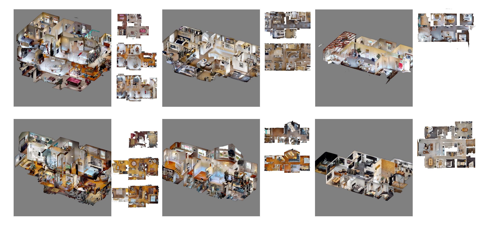

MMSP 2025 Embodied AI Challenge:
Long-horizon Vision-Language Navigation Challenge
September 21 to September 23, 2025Beijing, China
The 1st Long-horizon Vision-Language Navigation Challenge based on the insights presented in the
LH-VLN—hosted as the “Embodied AI Challenge” track of the IEEE 27th International Workshop on Multimedia Signal Processing (MMSP 2025)—focuses on complicated long-horizon VLN tasks. Our LHPR-VLN benchmark defines a complex task that includes multiple single-stage subtasks. For an LHPR-VLN task, the basic format is “Find something somewhere, and take it to something somewhere, then. . . ”. Each complex task involves locating an object at a specified initial location and transporting it to a designated target location, potentially encompassing two to four sequential navigation subtasks. The embodied agent needs to sequentially complete these single-stage navigation tasks to ultimately fulfill the instruction. These tasks emphasizes long-term planning and decision consistency across consecutive subtasks. The goal is to push agents beyond simple, short-term navigation by requiring them to deeply comprehend complex task instructions, maintain continuous navigation, and handle sequential sub-tasks seamlessly across a dynamic environment.

Figure 1: Environment where agents execute navigation tasks.

Video 1: Agent executing the LH-VLN task.
Benchmark: LHPR-VLN.
The tasks within this benchmark all consist of multiple single-stage subtasks. Throughout navigation, the agent acquires observational data from three perspectives (+60° , 0° , −60° ) and is permitted to execute fundamental actions: turn left, move forward, turn right, and stop. When the agent selects the “stop” action, the sub-task is deemed complete, and task success is evaluated based on the agent’s final positional state relative to the target.
For each single-stage navigation task, the agent must approach within a 1-meter geodesic distance of the target object, ensuring the object is positioned within a 60-degree horizontal field of view to maintain task fidelity.